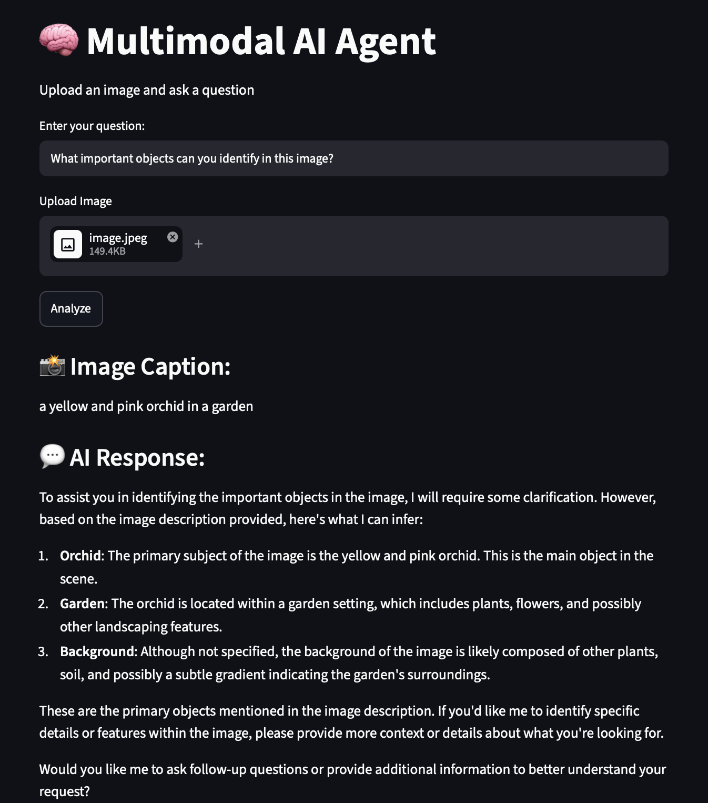
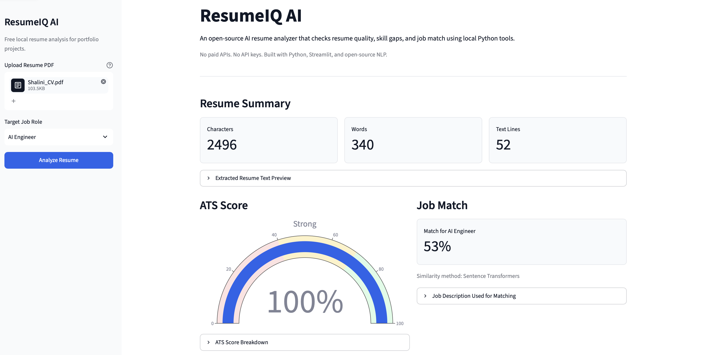
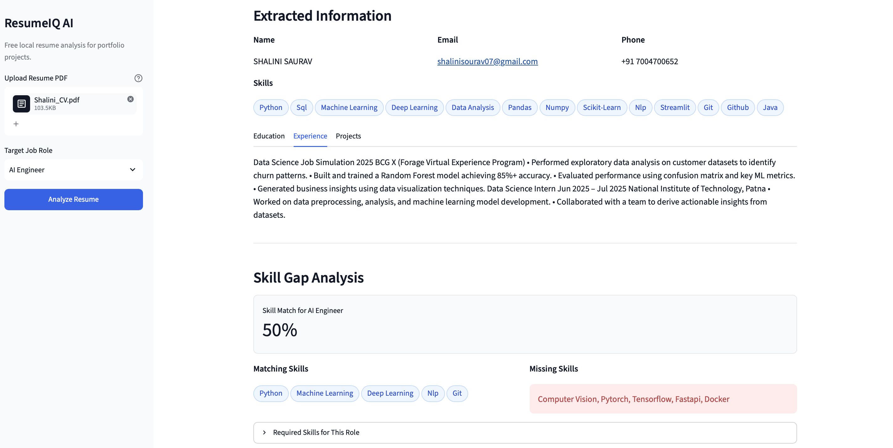
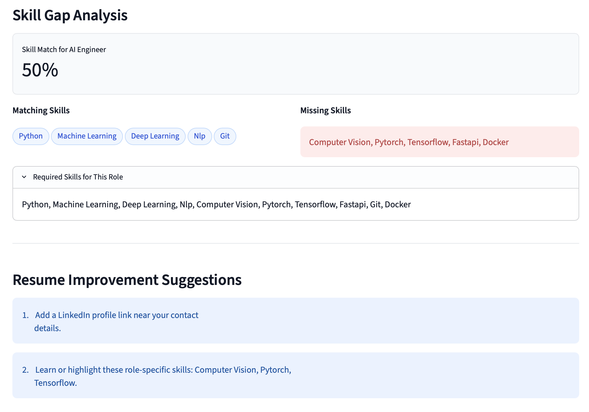
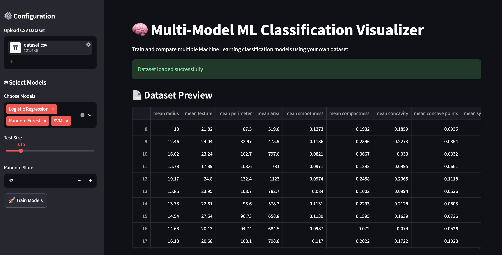
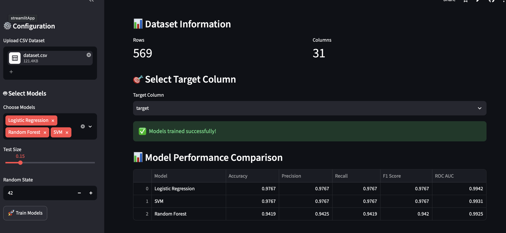
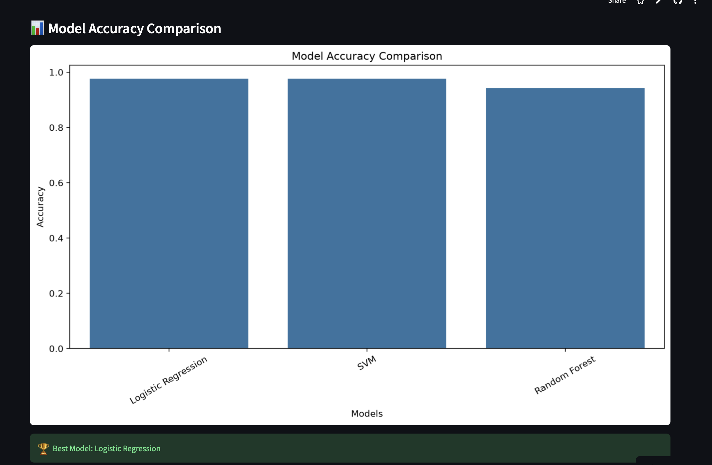
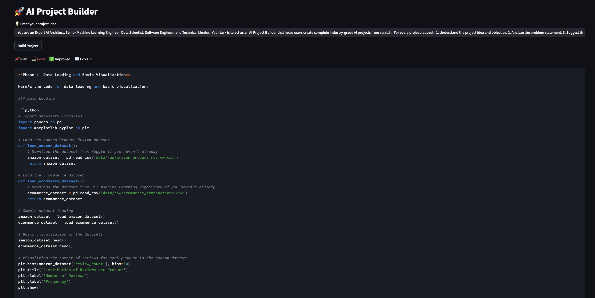
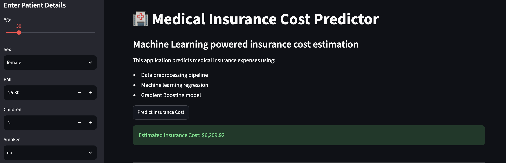
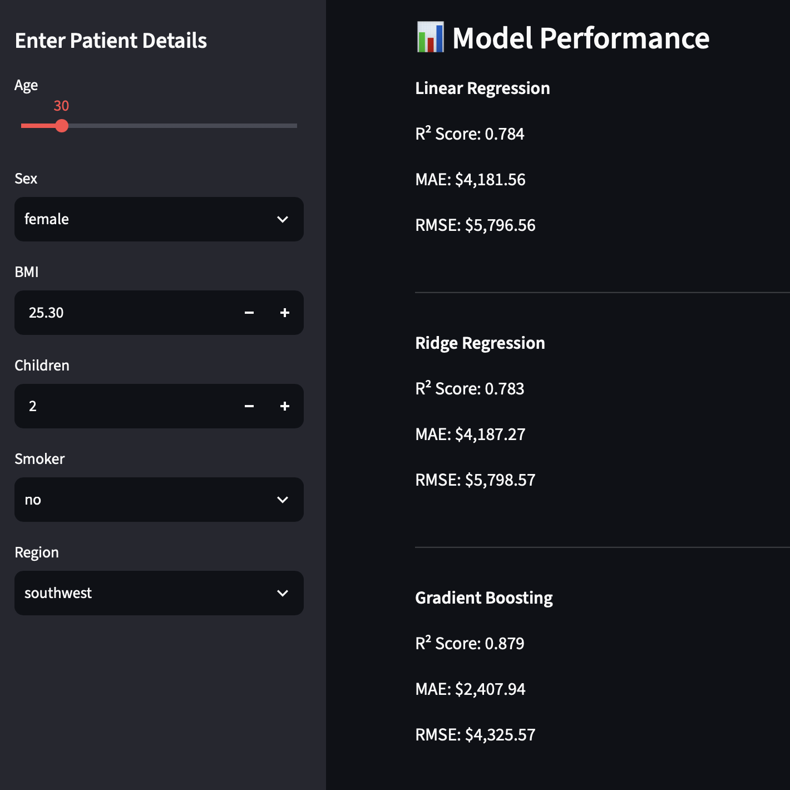

Aspiring AI Engineer • Machine Learning • Generative AI
Building intelligent AI applications using Machine Learning, Deep Learning, Natural Language Processing, Large Language Models (LLMs), Retrieval-Augmented Generation (RAG), AI Agents and Multimodal AI.
AI Projects
Live Deployments
Certifications
AI Domains
I am an aspiring AI Engineer currently pursuing a B.Tech in Computer Science & Engineering (Data Science) and entering my final year. My interests span Machine Learning, Deep Learning, Natural Language Processing, Generative AI, Retrieval-Augmented Generation (RAG), AI Agents, Agentic AI, and Multimodal AI Systems. I enjoy designing intelligent products, building production-ready AI applications, and continuously exploring emerging technologies to solve real-world problems through data-driven solutions.
LLM-powered applications, intelligent assistants, prompt engineering workflows, and AI automation solutions.
Document-aware AI systems using embeddings, vector search, LangChain, and Retrieval-Augmented Generation.
Autonomous AI workflows, tool-using agents, and next-generation Agentic AI systems.
Applications capable of understanding text, images, and multimodal information simultaneously.


AI-powered mental health journaling platform that detects user emotions, tracks mood history, analyzes emotional intensity, and provides personalized wellness recommendations using Machine Learning and NLP.


Retrieval-Augmented Generation system combining embeddings, vector search, and Large Language Models to answer questions from custom documents with high accuracy.


AI-powered study assistant capable of summarizing PDFs, explaining concepts, answering questions, and making learning interactive using Large Language Models.

Multimodal AI application capable of understanding both images and text while generating intelligent responses through advanced AI reasoning.



AI-powered Resume Analyzer that extracts resume insights, evaluates ATS compatibility, identifies skill gaps, and provides AI-powered job-match recommendations.



Interactive Machine Learning platform for uploading datasets, training multiple classification models, comparing performance metrics, and visualizing model evaluation results.



AI-powered application that generates complete AI project ideas, architecture diagrams, development roadmaps, and implementation strategies.


End-to-end Machine Learning regression application for predicting medical insurance expenses using EDA, feature engineering, Scikit-Learn Pipelines, and Streamlit deployment.

Machine Learning application that predicts student academic performance using demographic and educational features.

Restaurant review sentiment classification using TF-IDF, feature engineering, and Logistic Regression.
Worked on Machine Learning and Data Science workflows, including data preprocessing, exploratory data analysis, feature engineering, predictive modeling, model evaluation, and documentation of AI solutions.
Performed customer churn analysis, exploratory data analysis, machine learning modeling, business insight generation, and presented data-driven recommendations.
I'm actively looking for opportunities in Artificial Intelligence, Machine Learning, Generative AI, and Data Science. Feel free to reach out for internships, collaborations, or exciting AI projects.